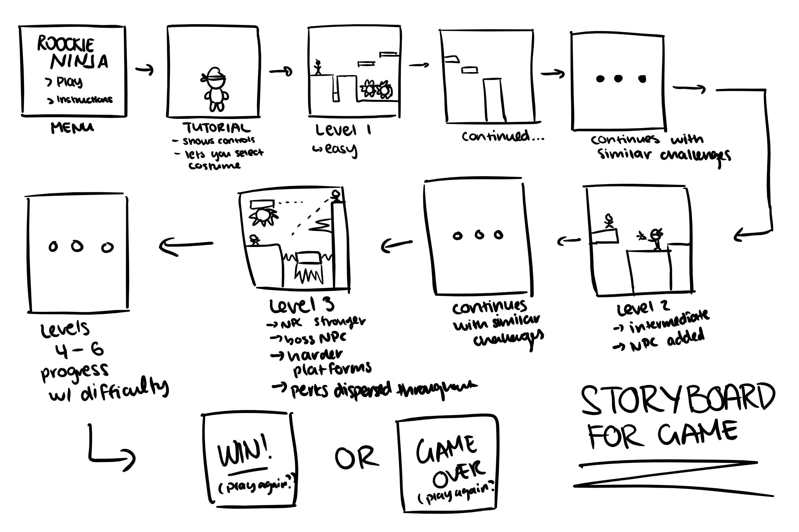
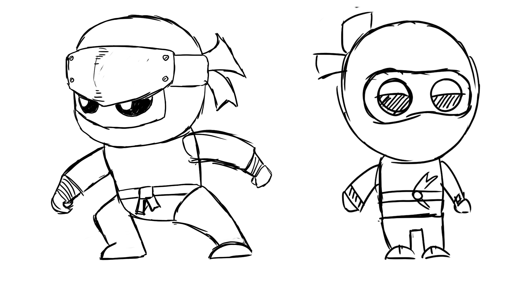
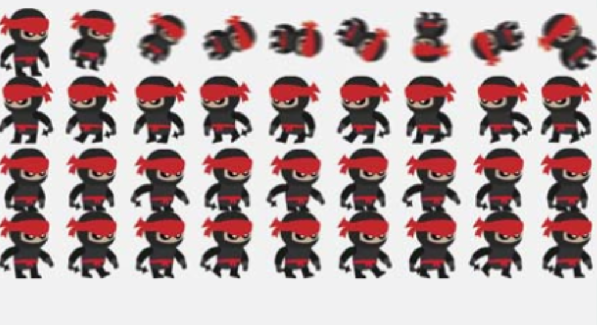

Process
Organization and Planning
Prior to creating the game, much organization and planning was required. I started off with a storyboard, which aided in outlining the key points of the game. This also helped to understand how the difficulty scale would increase as the game progresses.
Another vital step prior to the development of the game was the UML diagram. This flow chart like organization would help to plan the various parts of the program. This step aided greatly in the actual coding process.
Design Creation
Prior to any coding however, I focused on creating all the game assets. One major component of that included the character design. I started out with some sketches for posible designs, and then translated those into digital renders. To enhance the design and increase professionalism for the game, I set the goal of creating an animating character. After some research on the best approach for this, I created a sprite sheet. This consisted of a large image that contained many iterations of the character in a sequence.
 Development
Due to the immense planning, programming the game was an efficient process, and the development of the game progressed rapidly. Commencing with the first level, I programmed the game physics, and major components, which then led to the next few levels.